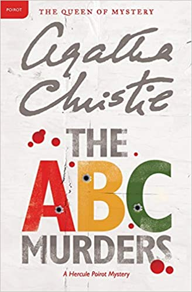

1.COP: A True Story by Michael Middleton
In this brutally honest portrait, Sergeant Michael Middleton, a retired veteran of the LAPD, tells the gripping tale of his two decades on some of America's meanest streets.
2.Cadet Blues by Rob Krider
Cadet Blues details author Rob Krider’s misadventures while attending the California Highway Patrol Academy.
This hilarious book is all too real, and it’s a great read for anyone thinking about attending a law enforcement academy or someone who is nostalgic about their academy days.
3.The A. B. C. Murders by Agatha Christie

This book breaks with Christie's usual style with a string of murders with seemingly random victims. Basically every serial killer novel where a detective tries to figure out how the victims are connected exists because this book did it first.
4.The Mousetrap by Agatha Christie
The scene is set when a group of people gathered in a country house cut off by the snow discover, to their horror, that there is a murderer in their midst. Who can it be? One by one the suspicious characters reveal their sordid pasts until at the last, nerve-shredding moment the identity and the motive are finally revealed.
5.Sleeping Murder by Agatha Christie
Soon after Gwenda moved into her new home, odd things started to happen. Despite her best efforts to modernize the house, she only succeeded in dredging up its past. Worse, she felt an irrational sense of terror every time she climbed the stairs.